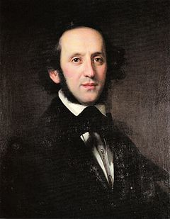

Felix Mendelssohn's Violin Concerto in E minor, Op. 64, is his last large orchestral work. It holds an important place in the violin repertoire and is one of the most popular and most frequently performed violin concertos in history.[1][2][3] A typical performance lasts just under half an hour.
Mendelssohn originally proposed the idea of the violin concerto to Ferdinand David, a close friend and then concertmaster of the Leipzig Gewandhaus Orchestra. Although conceived in 1838, the work took another six years to complete and was not premiered until 1845. During this time, Mendelssohn maintained a regular correspondence with David, who gave him many suggestions. The work itself was one of the foremost violin concertos of the Romantic era and was influential on many other composers.